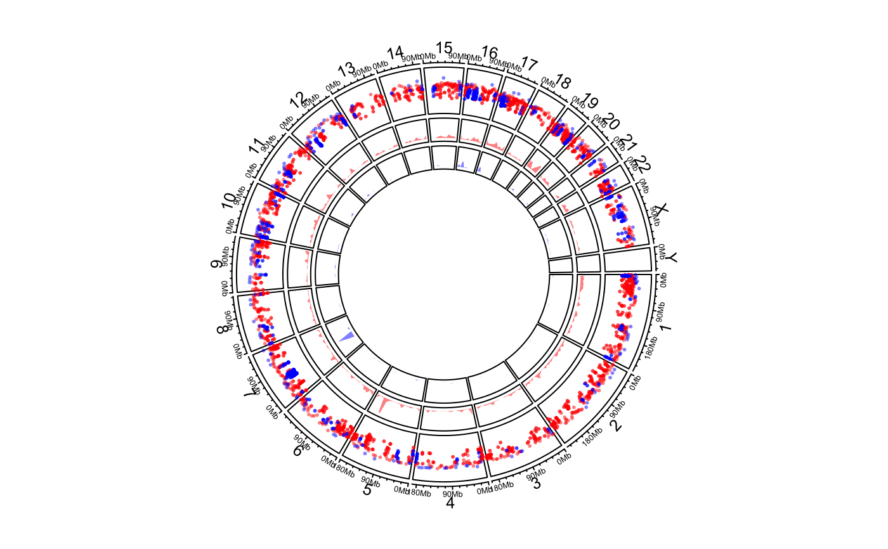

circos.genomicDensity.RdCalculate and add genomic density track
circos.genomicDensity( data, ylim.force = FALSE, window.size = NULL, overlap = TRUE, col = ifelse(area, "grey", "black"), lwd = par("lwd"), lty = par("lty"), type = "l", area = TRUE, area.baseline = NULL, baseline = 0, border = NA, ...)
| data | A bed-file-like data frame or a list of data frames |
|---|---|
| ylim.force | Whether to force upper bound of |
| window.size | Pass to |
| overlap | Pass to |
| col | Colors. It should be length of one. If |
| lwd | Width of lines |
| lty | Style of lines |
| type | Type of lines, see |
| area | See |
| area.baseline | Deprecated, use |
| baseline | See |
| border | See |
| ... | Pass to |
This function is a high-level graphical function, and it will create a new track.
load(system.file(package = "circlize", "extdata", "DMR.RData")) # rainfall circos.initializeWithIdeogram(plotType = c("axis", "labels"))bed_list = list(DMR_hyper, DMR_hypo) circos.genomicRainfall(bed_list, pch = 16, cex = 0.4, col = c("#FF000080", "#0000FF80"))